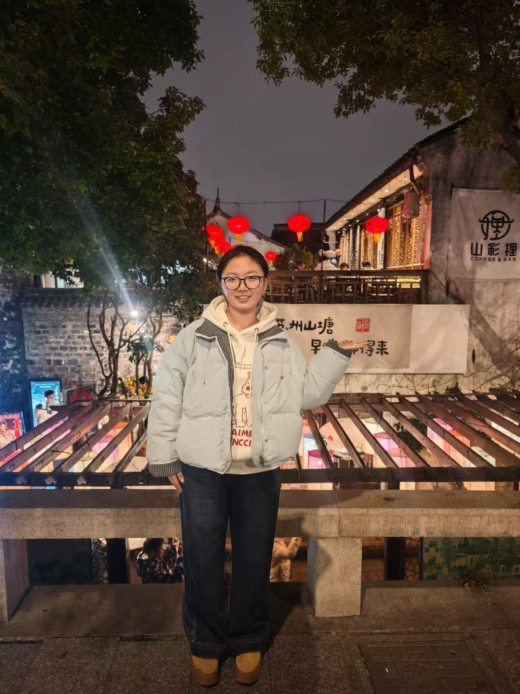
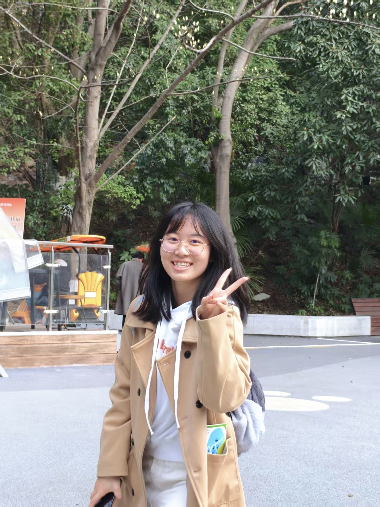
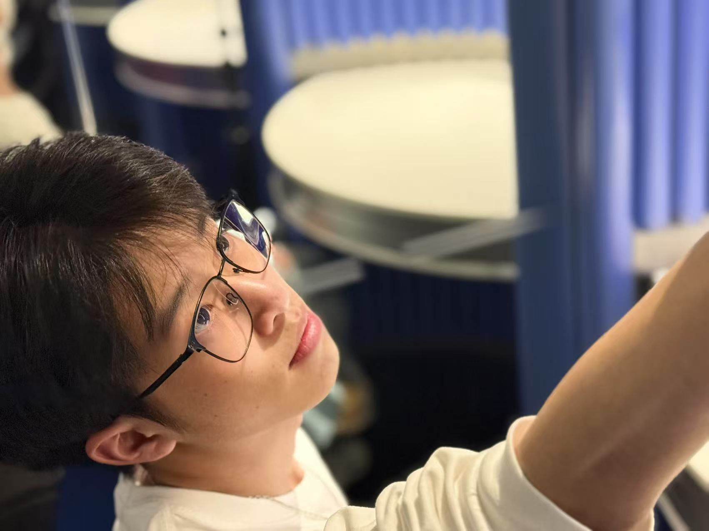
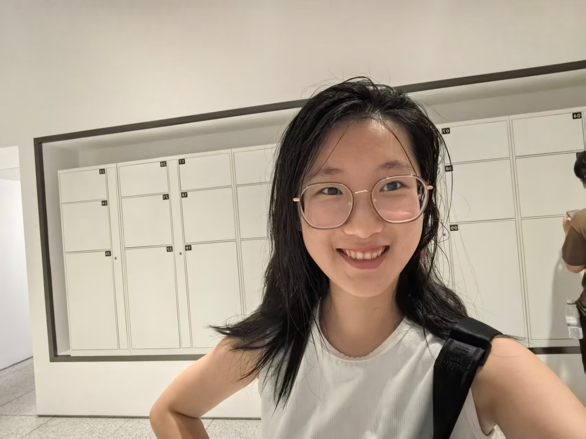

指导教师
季中扬
A Posthuman Turn in Aesthetics in the Age of Artificial Intelligence: From the Disinterested Spectator to the Distributed Aesthetic Subject
本网站将理论研究、互动判断与人机共创材料放在同一条体验路径中。 访问者可以先理解问题，再参与判断，最后观看创作过程并留下回应。
向下浏览，查看项目定位、团队和研究路径。
项目关注的不是“人工智能能不能创作”这一单一问题，而是技术、创作者、观看者和媒介如何共同改变审美经验。
季中扬
人工智能介入后的创作、观看与审美判断
文献综述、问卷调查、互动实验与人机共创展示
研究论述、问卷分析、互动网站与共创材料档案
下面三个问题构成网站各个页面之间的逻辑线索。
当算法、数据、界面和用户共同参与创作时，审美主体是否仍能被还原为一个独立的人类个体？
我们是在依据作品本身判断，还是会把创作者身份、生成方式和平台机制一起纳入审美判断？
在提示、筛选、修改和再生成的过程中，观看者是否也正在成为作品意义的一部分？
团队成员共同承担理论研究、问卷分析、网页制作和成果表达工作。

汉语言文学专业，承担文献综述撰写、PPT 制作等任务。

哲学拔尖专业，承担文献综述撰写与 PPT 制作。

哲学拔尖专业，承担问卷制作、分析报告撰写与 PPT 制作。

哲学拔尖专业，承担网页制作、文献综述撰写与 PPT 制作。
项目通过“理解—参与—观看—回应”四个环节，把抽象理论转化为可体验的研究现场。
从传统审美主体、后人类主义和人工智能美学的讨论出发，明确问题意识。
通过问卷和互动题目观察大众如何判断 AI 参与的作品与创作关系。
记录提示、生成、筛选和人工调整，让创作过程本身成为可观看的材料。
通过网站展示和反馈收集，继续讨论审美主体如何在关系中生成。